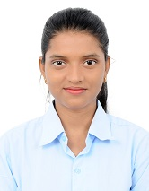

|  |
Priyanka KumariStudent at BIT Mesra and doing a course on Electronics and Communication Engineering BIT Mesra Site Working on Web Development Love watching web series and dancing |
| Course | Specialisation | Institue | Board/University | CGPA | Year |
| BE | Electronics and Communication Engineering | Birla Institute of Technology,Mesra | Deemed | 6.67 | 2020 |
| X11 | Science | St.Mary's English High School,Jamshedpur | Deemed | 70 | 2016 |
| X | General | St.Mary's English High School,Jamshedpur | CBSE | 9.20 | 2014 |
The main objective of our project is to reduce the wastage of water and save time for people.Our project is better than others as it reduces the hardware complexity and it is cheaper than others.